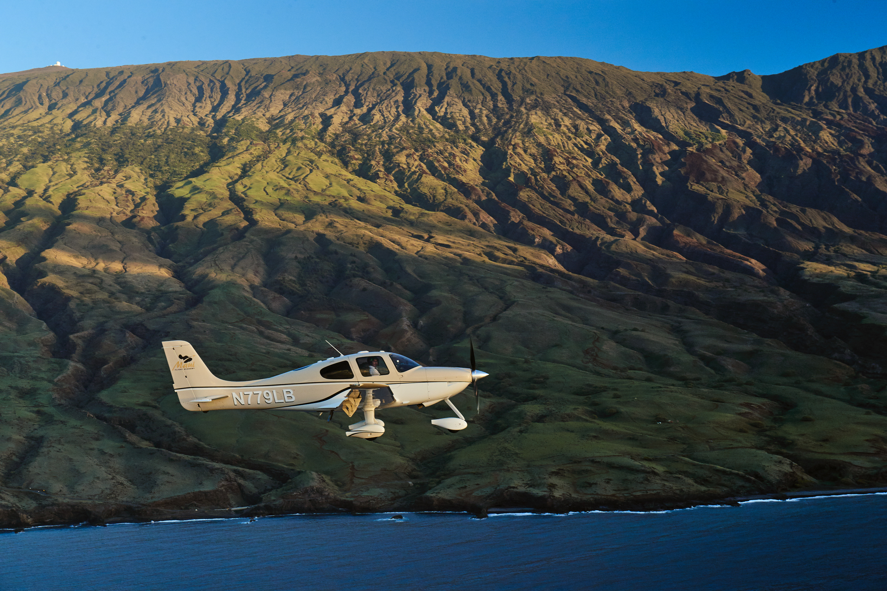
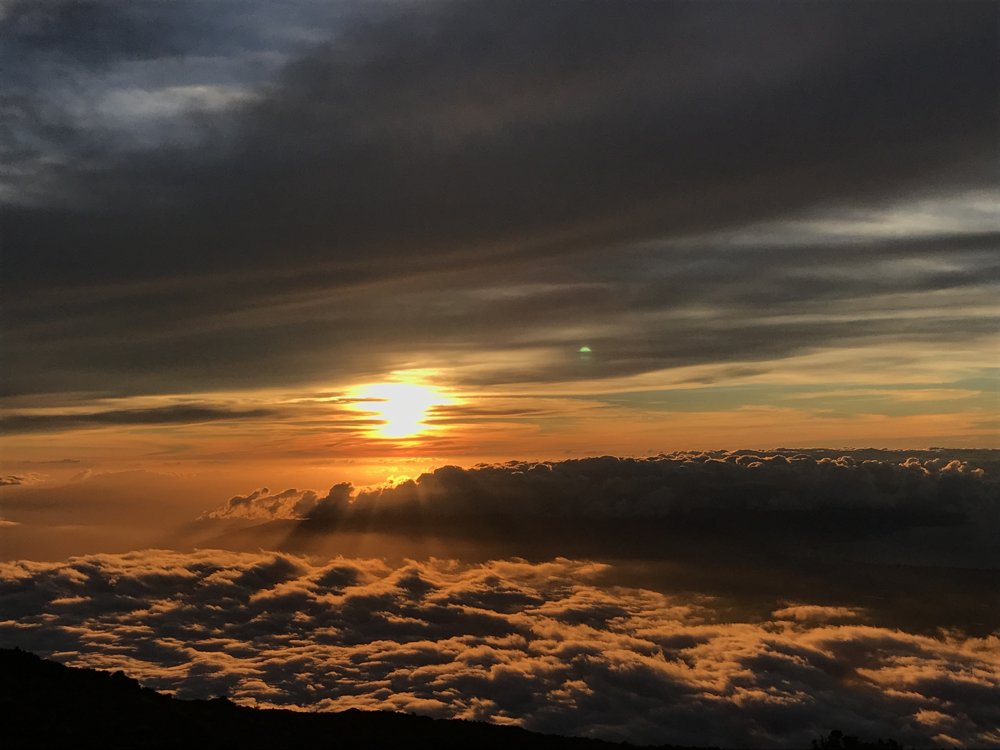
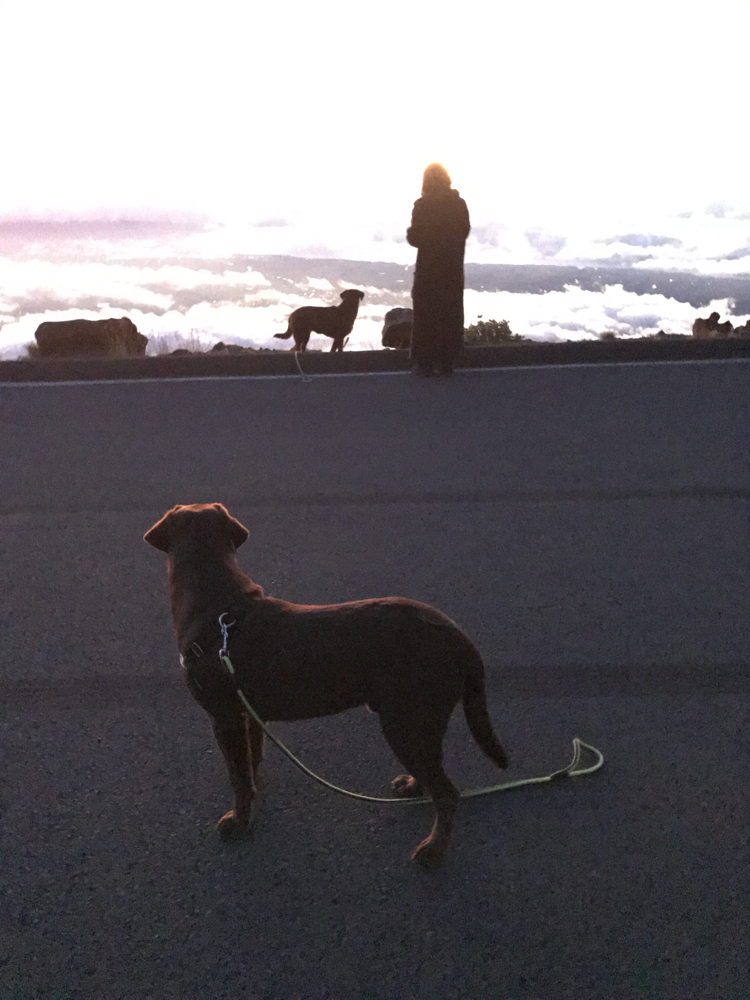
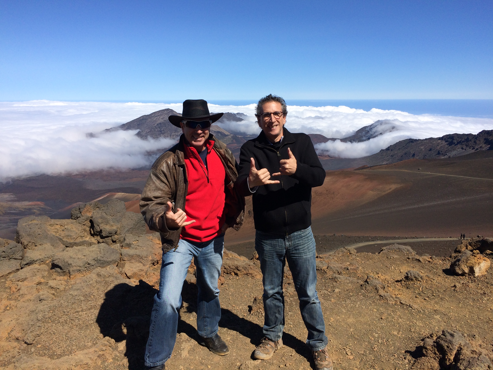

Haleakalā: What to Know Before You Go
From sea level to 10,023 feet in under two hours — the volcano that starts most Maui mornings before the sun does.
House of the Sun: five climate zones in ninety minutes, and a crater that looks more like Mars than Maui.

A Different Island Up There
Haleakalā means "House of the Sun," and once you're standing on the crater rim at 10,023 feet, it earns the name. The drive up passes through five climate zones in about ninety minutes — tropical lowland, ranchland, cloud forest, and finally a red-and-black volcanic landscape that looks more like Mars than Maui.
Most visitors are up there for one of two reasons: sunrise, or the view once they're above the clouds looking down instead of up. Both are worth the drive.
The Reservation You Need Before 7am
If you want to be inside the park between 3am and 7am, you need a separate sunrise reservation — this is on top of the regular park entrance fee, not instead of it. Reservations are booked through recreation.gov, released about 60 days in advance, and cost a few dollars per vehicle. They routinely sell out in high season, so book the moment your dates are locked in rather than the week of your trip.
Sunset does not require a reservation. If sunrise reservations are gone or you'd rather sleep in, sunset at the summit is quieter, warmer, and just as dramatic — and it pairs well with a late-afternoon photo session on the way up or down.
What Catches People Off Guard
It's cold.
The summit regularly runs 30–40°F colder than Wailea, before wind chill. Bring real layers — a beach cover-up is not going to cut it at 6am on a volcano.
The altitude is real.
At 10,023 feet, some visitors feel lightheaded or short of breath, especially if they've just gotten off a flight. Drink water on the way up and take the summit slowly. If you've been scuba diving, most operators require at least 24 hours before you go to altitude.
Gas up first.
There are no gas stations past Kula, and the last stretch of road has no cell service. Fill the tank in Pukalani or Kula, not on the way up.
Closures happen with little notice.
The park closes for high wind, snow, lightning, and after storm damage — sometimes with only a few hours' warning. Check the park's current alerts at nps.gov/hale the morning you go, not the night before.

We Drove Our Dogs to 10,023 Feet
A few years back we took our chocolate labs from sea level all the way up to hike above 10,000 feet — partly to see how they'd handle the altitude and the cold, and partly because there's a spot up there we'd been wanting to share with them. There's also a small surprise in it for my wife.
Sea level to 10,023 feet, chocolate labs included.
Haleakalā, Answered
Do I need a reservation for sunrise?
Yes, if you want to enter the park between 3am and 7am. It's a separate reservation from the park entrance fee, booked on recreation.gov up to 60 days out. Sunset does not require one.
Is the summit open right now?
Check nps.gov/hale the day of your visit — the park closes for weather and storm damage with little advance notice, and we can't promise current status on this page.
How cold does it get at the summit?
Plan for 30–40°F colder than Wailea, plus wind chill. Layers, a hat, and closed-toe shoes make the difference between miserable and memorable.
Can I bring my dog?
Pets are typically allowed in parking areas and on paved roads but not on trails inside the park. Confirm current rules before you go.

Haleakalā makes for a striking pre-sunrise stop before a Wailea sunrise session, or a good excuse for an early start on your Maui morning either way.
View Sessions & Pricing